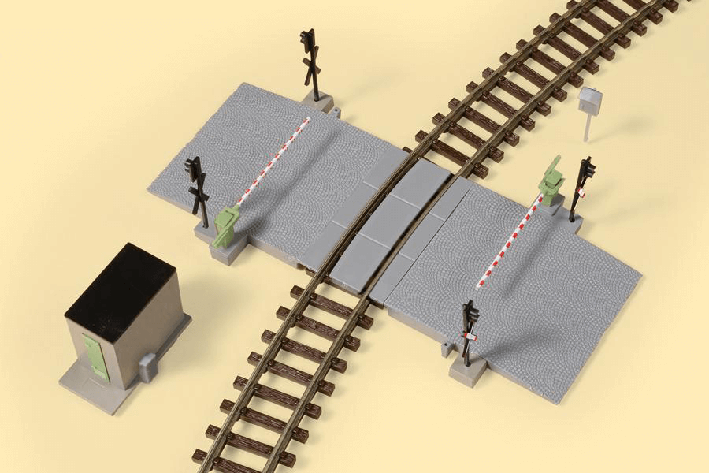

La práctica consiste en realizar un paso a nivel con los elementos que hemos utilizado hasta ahora.

(1) x Placa Arduino
(1) x Protoboard
(2) x LED rojo de 5mm
(1) x LED amarillo de 5mm
(1) x LED verde de 5mm
(4) x Resistencia de 220 ohmios
(1) x Interruptor de presión
(1) x Zumbador pasivo
(1) x Sensor de inclinación de bola
(7) x M M cables (cables de puente de macho a macho)
El paso a nivel consistirá en:
- Mediante el interruptor de presión se activará o desactivará todo el circuito, encendiendo un led rojo
cuando esté activado.
- Al activarse el circuito, mediante el movimiento del sensor de inclinación, simularemos la apertura y cierre
de la barrera del paso a nivel.
- Cuando la barrera está abajo, el semáforo (LEDs rojo, amarillo y verde) estará en rojo y sonará una señal
acústica mediante el zumbador activo.
- Cuando la barrera está arriba, el semáforo estará en verde y sonará una melodía mediante el zumbador
pasivo.
- Sólo cuando la barrera esté bajando y antes de que se ponga totalmente en horizontal, el semáforo se pondrá
en amarillo y sonará una alarma de peligro.